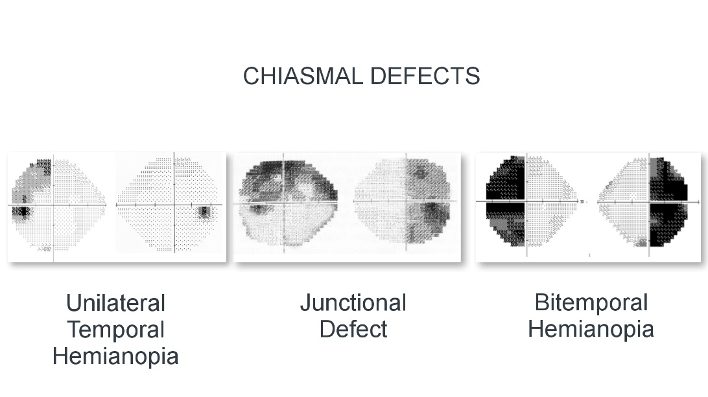
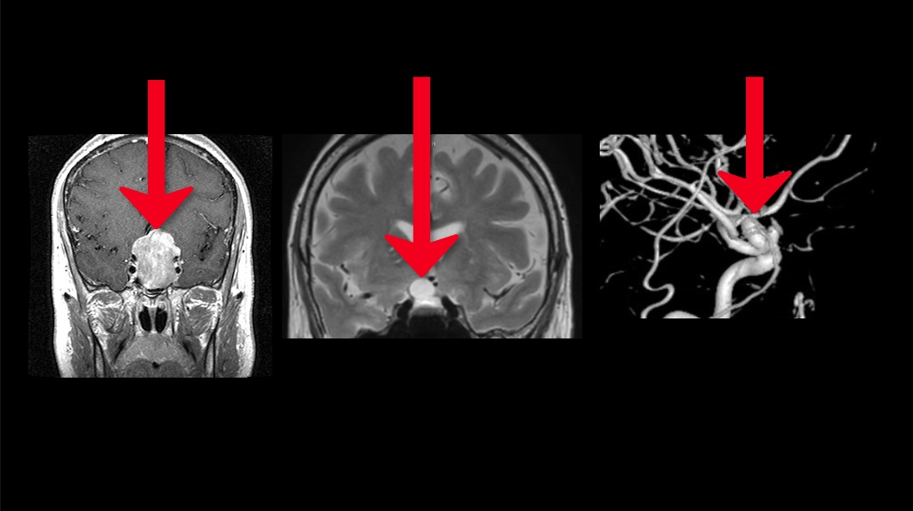

Redirects the path of optic nerve axons so that they will eventually represent vision in the cerebral hemispheres according to hemifields rather than as single eye fields
Unilateral temporal hemianopic defect: lesion lies in the ipsilateral optic nerve, damaging primarily fibers from the ipsilateral nasal retina which are especially vulnerable
Temporal hemianopic defect in one eye and nerve fiber bundle defect in other eye: lesion lies at the junction of the optic chiasm, damaging the ipsilateral optic nerve and axons from the contralateral nasal retina that loop into the ipsilateral optic nerve
Bitemporal hemianopic defects: lesion lies in or around the optic chiasm, preferentially damaging the nasal crossing fibers, which are especially vulnerable

Here is another look at the three patterns of visual field defects of chiasmal area lesions

Tip:
chiasmal area lesions are usually caused by tumor, cyst, or aneurysm—often successfully treated, especially if diagnosis comes early!